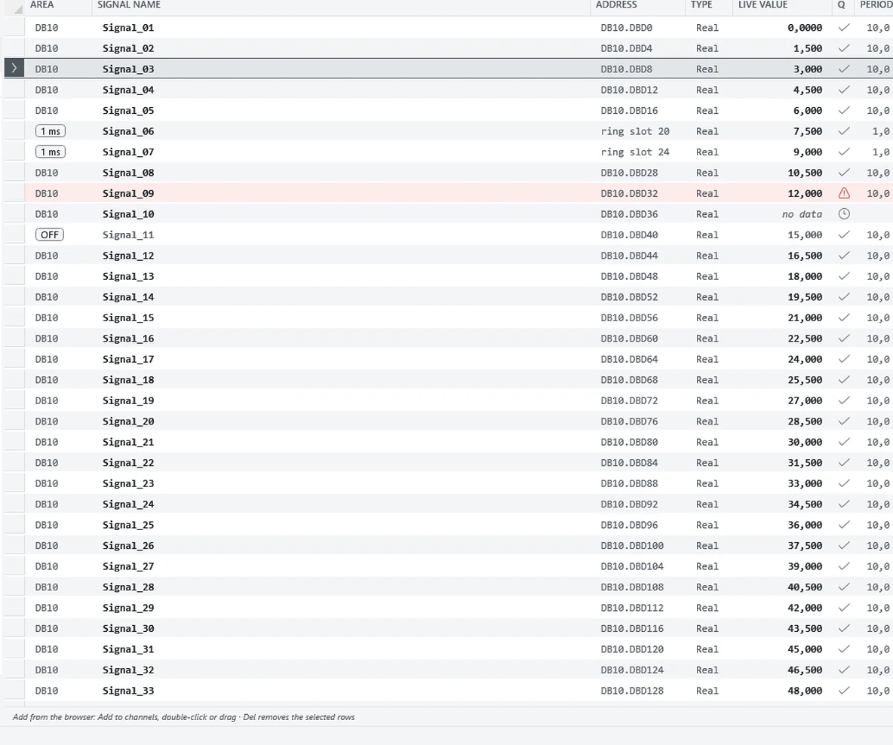

PlcTraceViewer · acquisizione, registrazione e analisi di segnali da PLC S7
PlcTraceViewer · signal acquisition, recording and analysis for S7 PLCs
Applicazione Windows che si collega a un controllore S7, ne campiona i segnali in modo continuo, li registra su file e li analizza, sia a registrazione conclusa sia durante l'acquisizione.
A Windows application that connects to an S7 controller, samples its signals continuously, records them to file and analyses them, both after the recording and during acquisition.
Versione
Version
2.1.2
Piattaforma
Platform
Windows 10 / 11 · 64 bit
Controllori
Controllers
S7-300 / 400 / 1200 / 1500
Documento
Document
DS-PTV-21
1 · Panoramica
1 · Overview
PlcTraceViewer si collega a un controllore S7 sulla rete di impianto e ne legge i segnali in modo ciclico. I campioni vengono mostrati in tempo reale e, su comando, scritti su file. Il file è pensato per essere analizzato anche molto tempo dopo: ogni campione riporta l'istante reale della lettura e i valori non disponibili restano tali, distinguibili da una misura valida.
PlcTraceViewer connects to an S7 controller on the plant network and reads its signals cyclically. Samples are shown in real time and, on command, written to file. The file is meant to be analysed even long afterwards: each sample carries the real time of the read and unavailable values stay unavailable, distinguishable from a valid measurement.
Utilizzi previsti
Intended use
Messa in servizio: verifica di tempi ciclo, sequenze e risposte degli attuatori.
Ricerca di guasti intermittenti: registrazioni lunghe non presidiate, da analizzare dopo l'evento.
Collaudo e caratterizzazione: confronto tra segnali, misura di ritardi, analisi in frequenza.
Documentazione: esportazione dei tratti significativi verso altri strumenti.
Commissioning: checking cycle times, sequences and actuator responses.
Finding intermittent faults: long unattended recordings, analysed after the event.
Testing and characterisation: comparing signals, measuring delays, frequency analysis.
Documentation: exporting the significant spans to other tools.
2 · Connessioni supportate
2 · Supported connections
Tre tipi di collegamento, selezionabili e gestiti separatamente. La scelta determina quali blocchi si possono leggere e in che modo.
Three connection types, selectable and handled separately. The choice determines which blocks can be read and how.
Collegamento
CPU
Indirizzamento
Blocchi ottimizzati
Requisiti sulla CPU
Connection
CPU
Addressing
Optimised blocks
Requirements on the CPU
PUT/GET
S7-300 / 400 / 1200 / 1500
assoluto
non leggibili
accesso PUT/GET consentito
PUT/GET
S7-300 / 400 / 1200 / 1500
absolute
not readable
PUT/GET access allowed
OPC UA
S7-1200 / 1500
simbolico
leggibili
server OPC UA attivo e con licenza
OPC UA
S7-1200 / 1500
symbolic
readable
OPC UA server enabled and licensed
S7comm-Plus
S7-1500 ≥ V2.9 S7-1200 ≥ V4.3
simbolico
leggibili
comunicazione PG/PC e HMI sicura abilitata
S7comm-Plus
S7-1500 ≥ V2.9 S7-1200 ≥ V4.3
symbolic
readable
secure PG/PC and HMI communication enabled
Trasporto
Transport
ISO-on-TCP, porta 102 (configurabile), port 102 (configurable)
Parametri
Parameters
famiglia CPU, rack, slot, porta, timeout di connessione e di operazione, numero di tentativi
CPU family, rack, slot, port, connect and operation timeouts, number of attempts
il messaggio di errore indica il livello che ha rifiutato la connessione (TCP, ISO/COTP, setup S7); test di raggiungibilità e test approfondito separati
the error message names the layer that refused the connection (TCP, ISO/COTP, S7 setup); separate reachability test and deep connection test
Blocchi ad accesso ottimizzato.Optimised-access blocks. Non hanno indirizzi assoluti e quindi non si possono leggere con PUT/GET. Il programma li riconosce e lo segnala, invece di restituire valori nulli. Per leggerli serve OPC UA o S7comm-Plus. They have no absolute addresses and therefore cannot be read with PUT/GET. The program detects them and reports it instead of returning null values. Reading them requires OPC UA or S7comm-Plus.
3 · Nomi simbolici e struttura dei dati
3 · Symbolic names and data structure
I nomi dei canali si possono ottenere da più sorgenti, usate da sole o insieme. Quando una sorgente è incompleta il programma lo segnala, invece di ricostruire strutture non verificate.
Channel names can come from several sources, used alone or together. When a source is incomplete the program reports it instead of reconstructing structures that cannot be verified.
Sorgente
Formati
Cosa fornisce
Source
Formats
What it provides
Progetto TIA
.ap16 … .ap21
nome e numero dei blocchi, struttura e offset dichiarati nel progetto
TIA project
.ap16 … .ap21
block names and numbers, structure and offsets declared in the project
Sorgenti dei blocchi
.db .scl .udt
variabili dei DB, con strutture annidate, UDT e array a più dimensioni
Block sources
.db .scl .udt
DB variables, with nested structures, UDTs and multi-dimensional arrays
Tabelle dei tag
.xlsx .csv
nome, tipo e commento di merker, ingressi e uscite
Tag tables
.xlsx .csv
name, type and comment of memory bits, inputs and outputs
Dalla CPU
—
tabella dei simboli su S7-300/400; elenco e struttura dei blocchi dati su S7-1200/1500 tramite OPC UA o S7comm-Plus, senza il progetto
From the CPU
—
symbol table on S7-300/400; data-block list and structure on S7-1200/1500 via OPC UA or S7comm-Plus, without the project
Gli offset assoluti dei blocchi non ottimizzati vengono calcolati secondo le regole di allineamento S7. Se la dichiarazione di un tipo non è disponibile, i membri interessati non vengono indirizzati, perché un offset non verificabile darebbe letture plausibili ma sbagliate.
Absolute offsets of non-optimised blocks are calculated according to the S7 alignment rules. If a type declaration is not available, the members concerned are not addressed, because an offset that cannot be verified would give plausible but wrong readings.
4 · Architettura di acquisizione
4 · Acquisition architecture
L'acquisizione non condivide il processo con l'interfaccia. Il controllore viene letto da un processo dedicato, avviato e controllato dall'applicazione, che non disegna nulla e gestisce le connessioni con un proprio orologio e una propria priorità.
Acquisition does not share the process with the user interface. The controller is read by a dedicated process, started and supervised by the application, which draws nothing and handles the connections with its own clock and its own priority.
Marcatura temporale
Time stamping
eseguita nel processo di acquisizione, nell'istante in cui arriva la risposta del controllore; un ritardo della finestra nel ricevere o disegnare il campione non modifica il tempo registrato
done in the acquisition process, at the moment the controller's answer arrives; a delay of the window in receiving or drawing the sample does not change the recorded time
Isolamento
Isolation
l'interfaccia (scorrimento degli elenchi, grafici, esportazioni, gestione della memoria) non può ritardare una lettura né spostare un istante di campionamento
the user interface (scrolling lists, charts, exports, memory management) cannot delay a read or move a sampling instant
Continuità
Continuity
se il processo di acquisizione non si avvia o si chiude, la lettura continua all'interno dell'applicazione e l'evento viene scritto nel registro
if the acquisition process does not start or closes, reading continues inside the application and the event is written to the log
Prova di laboratorio
Lab test
100 canali a 1 ms su controllori simulati, con l'interfaccia volutamente sotto carico: periodo tipico 0,999 ms, 99° percentile 1,06 ms, massimo 1,30 ms
100 channels at 1 ms on simulated controllers, with the user interface deliberately under load: typical period 0.999 ms, 99th percentile 1.06 ms, maximum 1.30 ms
Come leggere questi valori.How to read these figures. Descrivono il comportamento del programma, misurato in laboratorio. In impianto il fattore determinante resta il tempo di risposta del controllore, che non dipende dall'applicazione (vedi §5). They describe the behaviour of the program, measured in the lab. On a plant the deciding factor remains the controller's response time, which does not depend on the application (see §5).
5 · Campionamento
5 · Sampling
Intervalli selezionabili
Selectable intervals
1 · 2 · 5 · 10 · 20 · 50 · 100 · 200 · 500 · 1000 ms (2000 e 5000 ms quando li propone la verifica preliminare)(2000 and 5000 ms when suggested by the preliminary check)
Intervallo effettivo
Effective interval
misurato e mostrato per ogni canale, separato da quello impostato
measured and shown for each channel, separately from the one set
Verifica preliminare
Preliminary check
eseguita prima di aprire il primo file di registrazione
done before the first recording file is opened
Carico sul controllore
Load on the controller
numero di richieste contemporanee limitato; la percentuale di utilizzo del collegamento viene mostrata
the number of simultaneous requests is limited; the percentage of the connection in use is shown
Campionamento nel PLC
Sampling inside the PLC
facoltativo, con blocchi generati dal programma e importati in TIA; il PLC campiona al ritmo del proprio OB e i dati vengono letti a blocchi
optional, with blocks generated by the program and imported into TIA; the PLC samples at the rate of its own OB and the data is read in batches
L'intervallo raggiungibile non è un dato di targa del prodotto.The interval that can be reached is not a product rating. Dipende dal modello di CPU, dal numero e dal tipo di canali e dal carico della rete. Il programma lo misura in impianto e, se l'intervallo richiesto non è raggiungibile, lo segnala prima di avviare la registrazione e propone un valore compatibile. It depends on the CPU model, the number and type of channels and the network load. The program measures it on site and, if the requested interval cannot be reached, reports it before the recording starts and suggests a compatible value.

L'intervallo effettivo è mostrato per ogni canale (colonne PERIOD e RATE), separato da quello impostato.The effective interval is shown for each channel (PERIOD and RATE columns), separately from the one set.
Buffer di campionamento nel PLC (facoltativo)
Sampling buffer in the PLC (optional)
Quando la frequenza necessaria non si ottiene in rete, il programma genera i blocchi da importare nel progetto TIA. Il buffer accetta segnali di tipi diversi (BOOL, BYTE, INT, DINT, WORD, DWORD, REAL, LREAL); numero di segnali per tipo e profondità sono configurabili e la memoria occupata nel PLC viene indicata prima della generazione.
When the rate you need cannot be reached over the network, the program generates the blocks to import into the TIA project. The buffer accepts signals of different types (BOOL, BYTE, INT, DINT, WORD, DWORD, REAL, LREAL); the number of signals per type and the depth are configurable, and the memory used in the PLC is shown before generating.
6 · Registrazione e gestione dei file
6 · Recording and file handling
Formato
Format
binario proprietario, estensione .drug
proprietary binary, extension .drug
Compressione
Compression
automatica sui file chiusi, estensione .drug.gz
automatic on closed files, extension .drug.gz
Organizzazione
Organisation
una cartella per giorno; suddivisione dei file per dimensione, configurabile
one folder per day; files split by size, configurable
Marcatura temporale
Time stamping
per campione, riferita all'istante della risposta del controllore
per sample, referring to the time of the controller's answer
Valori non disponibili
Unavailable values
registrati come valore mancante, non come zero
recorded as a missing value, not as zero
Sorveglianza
Supervision
controllo continuo dell'avanzamento della scrittura, con avviso all'utente
continuous check that writing is progressing, with a warning to the user
Gestione dello spazio
Space management
conservazione per durata o per spazio; i file più vecchi vengono compressi prima di essere eliminati; la registrazione in corso non viene mai toccata
retention by age or by space; the oldest files are compressed before being deleted; the recording in progress is never touched
Formati letti
Formats read
.drug · .drug.gz · .csv · .txt
Garanzie sul dato registrato
Guarantees on recorded data
Tempo reale di lettura: ogni campione riporta l'istante in cui il valore è stato effettivamente letto, non quello previsto.
Nessuna sostituzione: un valore non letto non viene mai sostituito con un altro valore, in nessun punto fino alla scrittura su disco.
Verifica preliminare: prima di aprire il primo file viene verificato che l'intervallo sia raggiungibile.
Scrittura controllata: un'interruzione della scrittura viene rilevata e segnalata durante la registrazione.
Real read time: each sample carries the time the value was actually read, not the planned one.
No substitution: a value that was not read is never replaced with another value, at any point up to writing to disk.
Preliminary check: before the first file is opened, the program checks that the interval can be reached.
Monitored writing: an interruption of writing is detected and reported during the recording.
7 · Visualizzazione e analisi
7 · Display and analysis
Gli strumenti di analisi funzionano allo stesso modo su una registrazione salvata e sui segnali in acquisizione. Ogni canale si può aprire in una finestra dedicata, in cui si trascinano altri canali da sovrapporre.
The analysis tools work the same way on a saved recording and on signals being acquired. Each channel can be opened in its own window, into which other channels can be dragged to overlay them.
Grafici
Charts
più segnali su un asse dei tempi comune, zoom e spostamento, scala automatica che mantiene le interruzioni
several signals on a common time axis, zoom and pan, automatic scaling that keeps gaps visible
Marker
Markers
verticali e orizzontali, con differenza di tempo, differenza di valore e frequenza corrispondente
vertical and horizontal, with time difference, value difference and the matching frequency
Statistiche
Statistics
sul tratto selezionato e sull'intero segnale
over the selected span and over the whole signal
Finestre
Windows
separate e indipendenti, utilizzabili su più monitor
separate and independent, usable across several monitors
Esportazione
Export
dati in .csv, grafico in .png, configurazione dei canali in .sigcfg
data as .csv, chart as .png, channel configuration as .sigcfg
Colonne di stato
Status columns
periodo e frequenza effettivi di ogni canale, qualità del valore corrente
effective period and rate of each channel, quality of the current value
8 · Segnali calcolati
8 · Computed signals
Un canale può essere definito da un'espressione invece che da un indirizzo. Le espressioni si possono combinare e possono usare altri canali, compresi altri canali calcolati.
A channel can be defined by an expression instead of an address. Expressions can be combined and can use other channels, including other computed channels.
Funzioni
Functions
94, raggruppate in dieci famiglie
94, grouped in ten families
Famiglie
Families
matematica · trigonometria · logica · derivate e integrali · filtri · statistiche su finestra mobile · statistiche globali · fronti e temporizzazioni · tempo e frequenza · compatibilità
maths · trigonometry · logic · derivatives and integrals · filters · moving-window statistics · global statistics · edges and timing · time and frequency · compatibility
Analisi in frequenza
Frequency analysis
trasformata di Fourier, distorsione armonica totale, correlazione, traslazione nel tempo
Fourier transform, total harmonic distortion, correlation, time shift
Unità
Units
derivate e integrali riferiti al secondo; filtri in Hz; finestre in secondi
derivatives and integrals per second; filters in Hz; windows in seconds
Segnali con periodi diversi
Signals with different periods
canali con periodi o istanti iniziali diversi vengono riportati a una base dei tempi comune prima di essere combinati
channels with different periods or start times are brought to a common time base before being combined
Errori
Errors
segnalati con la posizione nell'espressione; non vengono mai convertiti in valori numerici
reported with their position in the expression; never converted into numeric values
Editor
Editor
anteprima della curva risultante mentre si scrive l'espressione
preview of the resulting curve while the expression is being written
Un servizio di Windows pubblica i valori correnti su una pagina consultabile dai browser della rete locale. La pagina invia i comandi all'applicazione: la registrazione avviata dalla dashboard è quella dell'applicazione, non una seconda registrazione.
A Windows service publishes the current values on a page that browsers on the local network can open. The page sends the commands to the application: a recording started from the dashboard is the application's own, not a second recording.
Servizio
Service
servizio Windows facoltativo: si sceglie durante l'installazione e poi si avvia con Windows
optional Windows service: selected during installation, then it starts with Windows
Accesso
Access
HTTP sulla porta 8085 (configurabile)
HTTP on port 8085 (configurable)
Funzioni
Functions
valori in tempo reale, andamento recente, selezione dei segnali, avvio e arresto della registrazione, stato del disco
live values, recent trend, signal selection, start and stop of the recording, disk status
Autenticazione
Authentication
nessuna: solo per reti di impianto protette
none: for protected plant networks only
Disponibilità
Availability
funzione PRO
PRO feature
Sicurezza.Security. La pagina non ha autenticazione: chiunque raggiunga la porta può vedere i valori e comandare la registrazione. Va usata su una rete di impianto protetta e non va esposta a internet. The page has no authentication: anyone who reaches the port can see the values and control the recording. Use it on a protected plant network and do not expose it to the internet.
10 · Licenza e requisiti
10 · Licence and requirements
Versione Free
Free edition
utilizzabile senza attivazione e senza scadenza. Apertura e analisi delle registrazioni (un file alla volta): grafici, marker, statistiche
usable without activation and without expiry. Opening and analysing recordings (one file at a time): charts, markers, statistics
Versione PRO
PRO edition
si attiva con la licenza. Acquisizione e registrazione, lettura di un progetto TIA, generazione dei blocchi per il campionamento a 1 ms, dashboard web, segnali calcolati, più file aperti insieme con assi sincronizzati, finestre di analisi separate, esportazione CSV e immagine, copia negli appunti, importazione da ibaAnalyzer
enabled by the licence. Acquisition and recording, reading a TIA project, generation of the blocks for 1 ms sampling, web dashboard, computed signals, several files open at once with synchronised axes, separate analysis windows, CSV and image export, copy to clipboard, ibaAnalyzer import
Attivazione
Activation
non richiede internet; se una connessione è disponibile, lo stato della licenza viene verificato sul portale senza inviare dati d'impianto
does not need internet; if a connection is available, the licence status is checked on the portal without sending plant data
Legame con il PC
Binding to the PC
licenza (file .ptvlic) legata a un solo PC e firmata digitalmente
licence (.ptvlic file) bound to a single PC and digitally signed
Durata
Duration
a tempo o senza scadenza, come indicato nella licenza
time-limited or perpetual, as stated in the licence
Recupero
Recovery
una licenza persa si scarica di nuovo dal portale o viene emessa di nuovo
a lost licence can be downloaded again from the portal or reissued
Ore di registrazione
Recording hours
la licenza può prevedere un numero massimo di ore di registrazione; il programma avvisa quando ci si avvicina al limite
the licence may include a maximum number of recording hours; the program warns when the limit is near
Limite tag Live
Live-tag limit
la licenza può limitare il numero di tag Live; il portale mostra il limite assegnato
the licence may limit the number of Live tags; the portal shows the limit assigned
Scadenza durante una registrazione
Expiry during a recording
la registrazione in corso non viene interrotta e il file resta completo; le funzioni PRO si disattivano al termine della registrazione
the recording in progress is not interrupted and the file stays complete; PRO features are disabled when the recording ends
incluso nell'installazione; nessun componente da installare a parte
included in the installer; nothing to install separately
Rete
Network
accesso IP al controllore; porta 102 raggiungibile
IP access to the controller; port 102 reachable
Spazio su disco
Disk space
dipende dalla durata delle registrazioni; la gestione automatica dello spazio è configurabile
depends on how long the recordings run; automatic space management is configurable
Installazione
Installation
installazione guidata per utente; il servizio della dashboard è facoltativo e richiede l'autorizzazione di Windows
guided per-user installation; the dashboard service is optional and requires Windows permission
Lettura del progetto TIA
Reading the TIA project
facoltativa; richiede TIA Portal e Openness installati e con licenza del cliente, l'utente nel gruppo locale Siemens TIA Openness e .NET Framework 4.8 (già presente in Windows 10 dalla 1903 e in Windows 11)
optional; requires TIA Portal and Openness installed and licensed by the customer, the user in the local Siemens TIA Openness group and .NET Framework 4.8 (already present in Windows 10 from 1903 and in Windows 11)
Lettore PDF
PDF reader
necessario solo per aprire manuale ed EULA in PDF
needed only to open the manual and the EULA in PDF
Aggiornamento
Update
installazione sopra la versione precedente, da chiudere prima
installation over the previous version, which must be closed first
Sola lettura. Il programma non scrive nel controllore: non forza variabili, non modifica il programma e non cambia lo stato della CPU.
Intervallo non garantito a priori. L'intervallo raggiungibile dipende dall'impianto e viene misurato sul posto.
Blocchi ottimizzati. Non si possono indirizzare in modo assoluto; richiedono OPC UA o S7comm-Plus, con i relativi requisiti sulla CPU.
Non sostituisce l'ambiente di programmazione. Non programma, non compila e non fa diagnostica hardware.
Non è un sistema di archiviazione storica. È uno strumento per la messa in servizio e l'analisi dei guasti.
Nessun accesso remoto oltre la rete locale. Nessun servizio cloud e nessuna sincronizzazione esterna.
Interfaccia web senza autenticazione. Da usare solo su una rete di impianto protetta.
Read-only. The program does not write to the controller: it does not force variables, change the program or change the CPU state.
Interval not guaranteed in advance. The interval that can be reached depends on the plant and is measured on site.
Optimised blocks. They cannot be addressed absolutely; they require OPC UA or S7comm-Plus, with the related requirements on the CPU.
Not a replacement for the engineering environment. It does not program, compile or do hardware diagnostics.
Not a historian. It is a tool for commissioning and fault analysis.
No remote access beyond the local network. No cloud services and no external synchronisation.
Web interface without authentication. Use it only on a protected plant network.
13 · Dati tecnici
13 · Technical data
Riepilogo dei valori implementati nel programma. I punti che dipendono dall'impianto sono indicati come tali e vengono misurati sul posto.
Summary of the values implemented in the program. Points that depend on the plant are marked as such and are measured on site.
Tempo e marcatura temporale
Time and timestamps
Origine del tempo
Time source
l'orologio del PC viene letto una sola volta all'avvio; poi il tempo avanza su un contatore monotono, che non risente di correzioni NTP, cambi manuali dell'ora legale ed errori dell'orologio hardware
the PC clock is read once at start-up; time then advances on a monotonic counter that is not affected by NTP corrections, manual daylight-saving changes or hardware clock errors
Deriva lenta
Slow drift
scostamenti fino a ±2 s vengono recuperati gradualmente (un ottavo della differenza ogni 5 s): una registrazione di ore resta allineata al tempo reale senza salti
differences up to ±2 s are recovered gradually (one eighth of the difference every 5 s): a recording lasting hours stays aligned with real time without jumps
Salto dell'orologio
Clock step
oltre ±2 s il salto viene rilevato e scritto nel registro, ma non applicato: gli istanti continuano ad avanzare allo stesso ritmo, quindi nel file il tempo non torna mai indietro
beyond ±2 s the jump is detected and written to the log, but not applied: timestamps keep advancing at the same rate, so time never goes backwards in the file
Istante sul campione
Sample instant
assegnato nell'istante in cui arriva la risposta del controllore, nel processo di acquisizione separato e ad alta priorità
assigned when the controller's answer arrives, in the separate high-priority acquisition process
Orologio del PLC
PLC clock
non viene mai letto: il programma usa solo la base dei tempi monotona del PC
never read: the program uses only the PC's monotonic time base
Nel file e a video
In file and on screen
i file salvano sempre il tempo in UTC; schermo ed esportazioni CSV mostrano l'ora locale del PC. Un file aperto in un altro fuso orario non sposta i dati
files always store time in UTC; the screen and CSV exports show the PC's local time. A file opened in another time zone does not shift its data
Ora legale
Daylight saving
cambia solo l'ora mostrata a schermo: nel file il tempo è in UTC, senza buchi né doppioni
only changes the time shown on screen: in the file time is stored in UTC, with no gaps or duplicates
Stato dei canali
Channel status
valutato su un contatore monotono: un canale risulta «non in lettura» dopo il maggiore tra 2 s e tre suoi periodi senza un valore valido
assessed on a monotonic counter: a channel counts as "not reading" after the longer of 2 s or three of its own periods without a valid value
misura il collegamento reale con l'elenco reale dei canali (mediana e caso peggiore su sette cicli) prima di scrivere il primo byte; il suggerimento automatico considera anche 2000 e 5000 ms
measures the real link with the real channel list (median and worst case over seven cycles) before the first byte is written; the automatic suggestion also considers 2000 and 5000 ms
Intervallo garantito
Guaranteed interval
solo il buffer nel PLC garantisce l'intervallo, perché l'OB ciclico gira nel controllore. La lettura via rete non dà garanzie: un ciclo in ritardo salta interi intervalli e lo segnala, invece di accodare letture di recupero
only the buffer in the PLC guarantees the interval, because the cyclic OB runs in the controller. Reading over the network gives no guarantee: a late cycle skips whole intervals and reports it, instead of queueing catch-up reads
Periodo misurato
Measured period
misurato per ogni canale tra due risposte consecutive e mostrato accanto a quello impostato; i cicli saltati vengono contati, segnalati subito e compaiono come interruzioni della traccia
measured for each channel between two consecutive answers and shown next to the set value; skipped cycles are counted, reported immediately and appear as gaps in the trace
Letture simboliche
Symbolic reads
se sono presenti anche canali letti per indirizzo, le letture per nome non scendono sotto un ciclo ogni 5 ms, per non sovraccaricare la comunicazione del controllore
when channels read by address are also present, reads by name do not go below one cycle every 5 ms, so as not to overload the controller's communication
Buffer nel PLC
In-PLC buffer
l'intervallo tra i campioni lo stabilisce il controllore (il ciclo dell'OB, letto dall'intestazione del blocco); l'orologio del PC serve solo come riferimento iniziale: istante = riferimento + indice × periodo del PLC
the spacing between samples is set by the controller (the OB cycle, read from the block header); the PC clock is only the starting reference: time = reference + index × PLC period
Profondità del buffer
Buffer depth
configurabile, predefinita 512 campioni (512 ms a 1 kHz); consigliati almeno 250 ms; la verifica preliminare richiede almeno 4 volte il ciclo di lettura (e comunque 50 ms); un DB non ottimizzato non può superare 64 KB
configurable, default 512 samples (512 ms at 1 kHz); at least 250 ms recommended; the preliminary check requires at least 4 times the read cycle (and never less than 50 ms); a non-optimised DB cannot exceed 64 KB
Lettura del buffer
Reading the buffer
a blocchi, circa un quarto del buffer per lettura; ogni posizione ha un contrassegno controllato prima e dopo la lettura: una posizione sovrascritta nel frattempo viene scartata e contata, mai registrata con un valore sbagliato. I campioni non letti in tempo vengono contati come persi
in blocks, about a quarter of the buffer per read; each position has a marker checked before and after the read: a position overwritten in the meantime is discarded and counted, never recorded with a wrong value. Samples not read in time are counted as lost
Valori e scalatura
Values and scaling
Precisione
Precision
ogni canale viene salvato con la precisione necessaria: 32 bit per BOOL, BYTE, INT, REAL e simili; 64 bit per DINT, UDINT, DWORD, LINT, ULINT, LWORD, LREAL, TIME e i tipi data/ora. I valori interi restano esatti fino a 2⁵³
each channel is stored with the precision it needs: 32 bits for BOOL, BYTE, INT, REAL and similar; 64 bits for DINT, UDINT, DWORD, LINT, ULINT, LWORD, LREAL, TIME and the date/time types. Integer values stay exact up to 2⁵³
Valore assente
Missing value
NaN significa «nessun valore»: un canale che non è stato letto scrive NaN, mai 0 e mai l'ultimo valore. Nell'analisi NaN compare come interruzione della traccia
NaN means "no value": a channel that was not read writes NaN, never 0 and never its last value. In the analysis NaN appears as a gap in the trace
Scalatura
Scaling
y = raw × ScaleFactor + ScaleOffset, applicata a ogni campione in tempo reale, prima della registrazione e della visualizzazione. I valori nel file sono già scalati
y = raw × ScaleFactor + ScaleOffset, applied to every sample in real time, before recording and display. Values in the file are already scaled
Tipi supportati
Supported types
BOOL · Byte · USInt · SInt · Char · WChar · String · WString · Word · UInt · Int · DWord · UDInt · DInt · Real · LReal · LInt · ULInt · LWord · Time · S5Time · Date · Time_Of_Day · Date_And_Time · DTL
Tipi composti
Composite types
ARRAY, STRUCT e UDT non vengono registrati come un unico valore: il browser mostra i loro membri supportati come canali separati
ARRAY, STRUCT and UDT are not recorded as a single value: the browser shows their supported members as separate channels
Canali di testo
Text channels
CHAR, WCHAR, STRING e WSTRING vengono letti come testo, con il loro tipo. STRING e WSTRING usano la lettura ciclica normale, non il buffer a 1 ms nel PLC
CHAR, WCHAR, STRING and WSTRING are read as text, with their type. STRING and WSTRING use normal cyclic reading, not the 1 ms buffer in the PLC
File
Files
Formati
Formats
DRG2 (formato precedente, colonne fisse, float32) e DRG3 v3/v4/v5. DRG3 v5 salva i valori numerici a 32 o 64 bit secondo il tipo e i testi come valore iniziale più gli eventi di cambio; le registrazioni precedenti si aprono senza conversione
DRG2 (earlier format, fixed columns, float32) and DRG3 v3/v4/v5. DRG3 v5 stores numeric values at 32 or 64 bits according to their type and text as an initial value plus change events; earlier recordings open without conversion
Canali durante la registrazione
Channels during recording
con DRG3 si possono aggiungere canali durante la registrazione: il nuovo canale parte dal momento dell'aggiunta e le righe precedenti restano vuote. I cambi di STRING e WSTRING vengono salvati come eventi di testo; rimozione, nuova aggiunta e rinomina seguono le regole di DRG3
with DRG3, channels can be added during recording: the new channel starts when it is added and earlier rows stay empty. STRING and WSTRING changes are stored as text events; removal, re-adding and renaming follow the DRG3 rules
Rotazione
Rotation
per dimensione (100 / 250 / 500 / 1024 MB, predefinito 500) o per durata (1 / 4 / 24 ore). Al raggiungimento del limite il file viene chiuso completo e se ne apre uno nuovo, senza interrompere la registrazione
by size (100 / 250 / 500 / 1024 MB, default 500) or by duration (1 / 4 / 24 hours). When the limit is reached the file is closed complete and a new one is opened, without interrupting the recording
Compressione
Compression
facoltativa (predefinita: disattivata); il file completato viene compresso in GZIP (.drug.gz) e l'originale viene eliminato solo dopo che la copia compressa esiste. I file compressi si aprono direttamente
optional (default: off); the completed file is compressed to GZIP (.drug.gz) and the original is deleted only after the compressed copy exists. Compressed files open directly
Conservazione
Retention
elimina i file più vecchi quando lo spazio libero scende sotto una soglia (predefinite: 5 GB avviso, 2 GB critico); il file in scrittura è protetto
deletes the oldest files when free space drops below a threshold (defaults: 5 GB warning, 2 GB critical); the file being written is protected
Interruzione di corrente
Power cut
i dati vengono scritti su disco circa una volta al secondo: un'interruzione di corrente fa perdere al massimo circa 1 s di dati e il file resta valido e apribile
data is written to disk about once per second: a power cut loses at most about 1 s of data and the file stays valid and can be opened
Esportazione CSV
CSV export
separatore configurabile (predefinito ;, anche ,, tabulazione, spazio), separatore decimale configurabile (predefinito automatico), codifica UTF-8, ora locale del PC. Se il separatore coincide con quello decimale viene usato ;
configurable separator (default ;, also ,, tab, space), configurable decimal separator (default automatic), UTF-8 encoding, PC local time. If the separator matches the decimal separator, ; is used
Collegamento
Connection
Porte
Ports
S7 Classic (PUT/GET) 102 (predefinita, configurabile) · S7comm-Plus 102 (fissa) · OPC UA 4840 (predefinita, configurabile) · servizio web 8085 (predefinita, configurabile)
S7 Classic (PUT/GET) 102 (default, configurable) · S7comm-Plus 102 (fixed) · OPC UA 4840 (default, configurable) · web service 8085 (default, configurable)
PUT/GET
PUT/GET
necessario per la lettura per indirizzo su S7-300/400 e S7-1200/1500; senza, la connessione riesce ma ogni lettura viene rifiutata. Per i blocchi ottimizzati serve anche l'accesso completo PG/PC e HMI
required for reading by address on S7-300/400 and S7-1200/1500; without it the connection succeeds but every read is refused. Optimised blocks also need full PG/PC and HMI access
Comportamento
Behaviour
c'è sempre una sola lettura in corso, senza richieste accodate: il ritmo dipende dalla velocità di risposta del controllore. Dopo errori ripetuti il programma rallenta (da 20 ms a 2 s) per non sovraccaricare la CPU
there is always only one read in progress, with no queued requests: the rate depends on how fast the controller answers. After repeated errors the program slows down (from 20 ms to 2 s) so as not to overload the CPU
Disconnessione
Disconnection
i canali letti per indirizzo passano a NaN e il collegamento viene ripristinato automaticamente con attese crescenti (da 1000 ms a 5 s); la registrazione continua
channels read by address go to NaN and the link is restored automatically with increasing waits (from 1000 ms to 5 s); recording continues
CPU in STOP
CPU STOP
i canali letti per nome passano a NaN e vengono ricollegati per nome al ritorno in RUN; la registrazione continua
channels read by name go to NaN and are bound again by name when the CPU returns to RUN; recording continues
Nuova lettura della CPU
Reading the CPU again
fuori dalla registrazione la CPU viene riletta come in una nuova connessione (intestazione del buffer, elenco dei blocchi, tipi e nomi); durante la registrazione si aggiorna solo l'elenco dei blocchi, senza riconnettersi
outside a recording the CPU is read again as in a new connection (buffer header, block list, types and names); during a recording only the block list is updated, without reconnecting
Limiti, memoria e registro
Limits, memory and log
Canali per file
Channels per file
65535 colonne per file DRG3 (limite del formato). Nell'acquisizione il numero di canali può essere limitato dalla licenza; un singolo trascinamento aggiunge al massimo 256 variabili
65535 columns per DRG3 file (format limit). During acquisition the number of channels may be limited by the licence; a single drag and drop adds at most 256 variables
Storico in acquisizione
Live history
512 MB condivisi tra tutti i canali, al massimo 1 ora; oltre questo limite lo storico si accorcia automaticamente e il programma lo scrive nel registro
512 MB shared by all channels, at most 1 hour; beyond that limit the history is shortened automatically and the program writes it in the log
Registro a video
On-screen log
nella finestra Live, con 3000 righe e 200000 caratteri per sessione; il pulsante di salvataggio esporta tutte le righe, comprese quelle ancora in coda
in the Live window, with 3000 lines and 200000 characters per session; the save button exports all lines, including those still queued
Registro su file
Log file
%LOCALAPPDATA%\PlcTraceViewer\logs\app.log, rotazione a 2 MB, 3 file conservati; errori gravi in crash.log (massimo 2 MB, 3 rotazioni)
%LOCALAPPDATA%\PlcTraceViewer\logs\app.log, 2 MB rotation, 3 files kept; serious errors in crash.log (at most 2 MB, 3 rotations)
File aperti
Open files
la versione Free apre una registrazione alla volta; la versione PRO ne apre più di una insieme
the Free edition opens one recording at a time; the PRO edition opens several at once
I valori di questa tabella sono quelli del programma.The values in this table are the program's own. Gli intervalli raggiungibili in impianto, la durata effettiva di una registrazione e l'occupazione del collegamento dipendono dall'impianto e vengono misurati sul posto prima della registrazione. The intervals that can be reached on site, the actual duration of a recording and the load on the connection depend on the plant and are measured on site before recording.